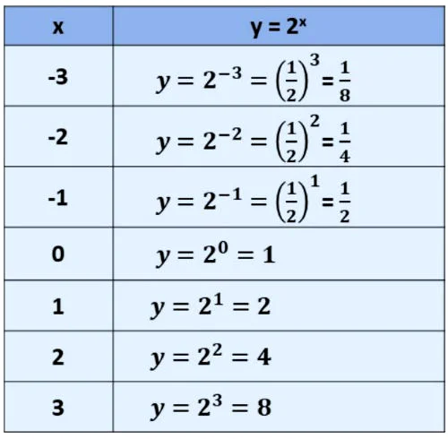

Mathb
Função exponencial
Exemplos:
f(x) = 4x
f(x) = (0,1)x
f(x) = (⅔)x
Nos exemplos acima 4, 0,1 e ⅔ são as bases, enquanto x é o expoente.
Gráfico da função exponencial
O gráfico desta função passa pelo ponto (0,1), pois todo número elevado a zero é igual a 1. Além disso, a curva exponencial não toca no eixo x.
Na função exponencial a base é sempre maior que zero, portanto a função terá sempre imagem positiva. Assim sendo, não apresenta pontos nos quadrantes III e IV (imagem negativa).
Abaixo representamos o gráfico da função exponencial.
Função Crescente ou Decrescente
Para constatar que essa função é crescente, atribuímos valores para x no expoente da função e encontramos a sua imagem. Os valores encontrados estão na tabela abaixo.
Observando a tabela, notamos que quando aumentamos o valor de x, a sua imagem também aumenta. Abaixo, representamos o gráfico desta função.